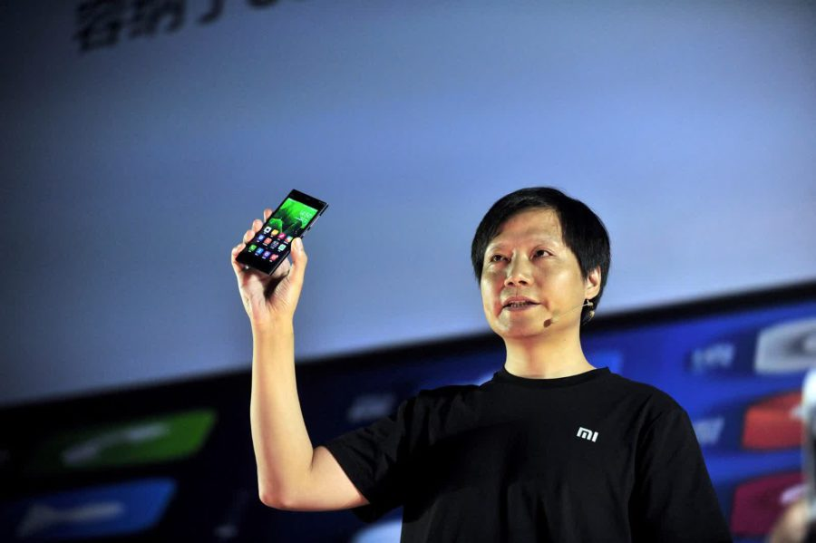

Лей Цзюнь
Его называют «китайским Стивом Джобсом», хотя ничего общего в их биографиях нет. Сам Лей Цзюнь много раз рассказывал, как его вдохновлял пример Стива Джобса. На сцене Лей любит одеваться в простую одежду и вести размеренную беседу с публикой, как и Стив. Но на этом все сходства заканчиваются, если не брать в расчет, что каждый из них основал крупную и успешную компанию.
Если Apple создавалась в небольшом гараже, то Xiaomi — проект с рациональным подходом от уже успешного бизнесмена. Да и Xiaomi намного более открытая компания для потребителей.
Лей Цзюнь родился в 1969 году в небольшой провинции на востоке Китая. В школе учился он средне, в 1991 окончил университет, получив степень бакалавра информатики. Там он увлекся программированием и компьютерными технологиями. На одной технологической выставке в Пекине он познакомился с Цю Боцзюнем, вице-президентом компании Kingsoft — сейчас это знаменитый китайский производитель софта, а тогда в ней работало 6 человек. Лей получил приглашение на ужин с вице-президентом, где ему предложили работу инженера. Уже в 1998 году Лей получит пост генерального директора компании Kingsoft. Параллельно с основной работой он разрабатывал сайт Joyo.com с книгами, фильмами и музыкой. Чуть позже его выкупила Amazon за 75 миллионов долларов.
В 2007 году компания Kingsoft выходит на IPO, так Лей Цзюнь стал успешным бизнесменом и начинающим инвестором. До создания Xiaomi он вложил деньги в 20 проектов, почти все они работают в интернете. Видимо, сам Лей Цзюнь не любит рассказывать о себе, либо в его жизни не было особо знаменательных событий, которые перевернули его жизнь с ног на голову. Я вижу расчетливого человека, который постепенно развивался, не задерживался на скучной работе и довольно успешно предсказывал, что будет востребовано в будущем. В общем, он трудолюбивый и расчетливый человек — возможно, это и связывает Лей Цзюня и Стива Джобса.
Лей Цзюнь родился в 1969 году в небольшой провинции на востоке Китая. В школе учился он средне, в 1991 окончил университет, получив степень бакалавра информатики. Там он увлекся программированием и компьютерными технологиями. На одной технологической выставке в Пекине он познакомился с Цю Боцзюнем, вице-президентом компании Kingsoft — сейчас это знаменитый китайский производитель софта, а тогда в ней работало 6 человек. Лей получил приглашение на ужин с вице-президентом, где ему предложили работу инженера. Уже в 1998 году Лей получит пост генерального директора компании Kingsoft. Параллельно с основной работой он разрабатывал сайт Joyo.com с книгами, фильмами и музыкой. Чуть позже его выкупила Amazon за 75 миллионов долларов.
В 2007 году компания Kingsoft выходит на IPO, так Лей Цзюнь стал успешным бизнесменом и начинающим инвестором. До создания Xiaomi он вложил деньги в 20 проектов, почти все они работают в интернете. Видимо, сам Лей Цзюнь не любит рассказывать о себе, либо в его жизни не было особо знаменательных событий, которые перевернули его жизнь с ног на голову. Я вижу расчетливого человека, который постепенно развивался, не задерживался на скучной работе и довольно успешно предсказывал, что будет востребовано в будущем. В общем, он трудолюбивый и расчетливый человек — возможно, это и связывает Лей Цзюня и Стива Джобса.